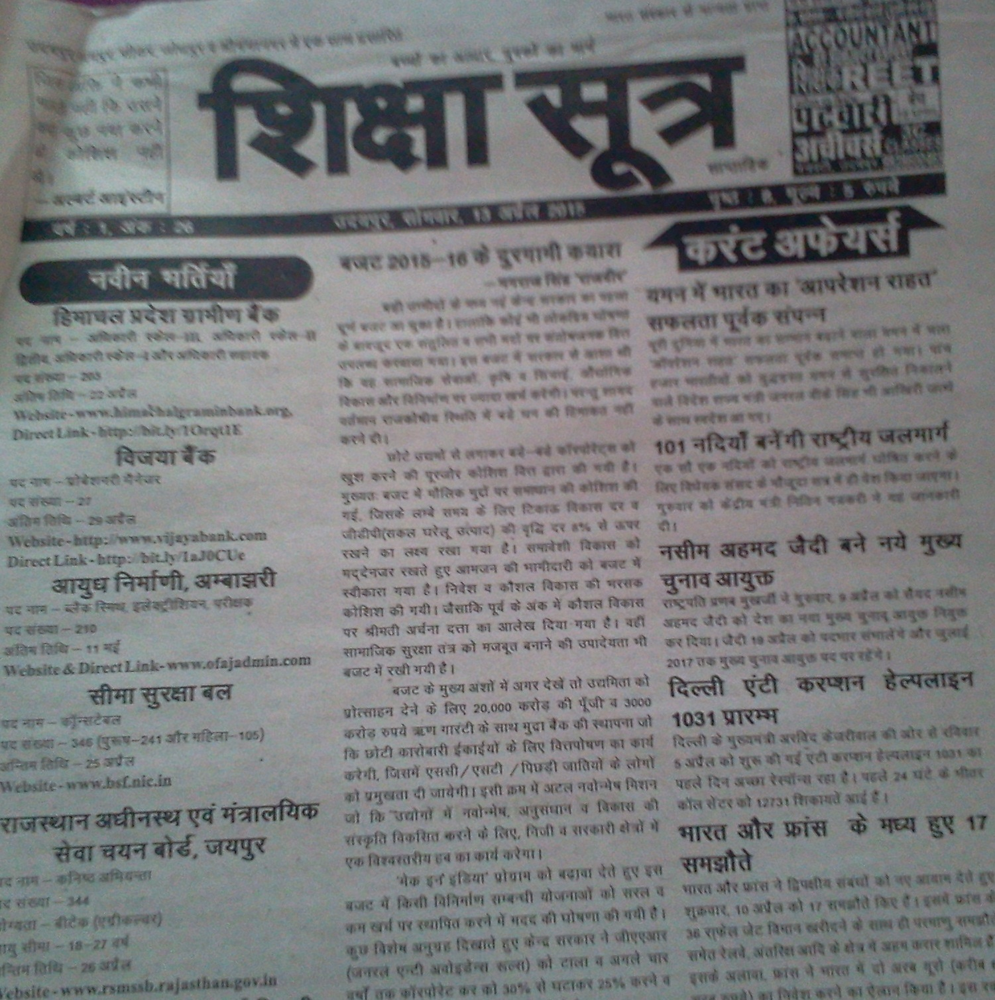

शिक्षा सूत्र अख़बार में पाठ्य सामग्री
- नई भर्तियों की सूचना
- सात दिन का करंट आफैर्स
- सामान्य अध्ययन (इतिहास, भूगोल, राजनीति विज्ञान, अर्थशास्त्र , विज्ञान, कंप्यूटर, विश्व ज्ञान)
- सामान्य अध्ययन मॉडल पेपर
- अंग्रेजी, गणित, तर्क शक्ति
- राजस्थान अध्ययन
- समसामयिक लेख
उदयपुर सिटी डोर टू डोर सेवा द्वारा
उदयपुर शहर में शिक्षा सूत्र अख़बार (वार्षिक शुल्क : 250 रुपये) मंगवाने के लिए संपर्क करें - 7665050402, 9982745862सम्पूर्ण राजस्थान में डाक सेवा द्वारा
पूरे राजस्थान में डाक से घर पर मंगवाने के लिए शिक्षा सूत्र अख़बार की वार्षिक सदस्यता लेवें.शिक्षा सूत्र अख़बार का वार्षिक सदस्यता शुल्क : 250 रुपये हैं तथा डाक खर्च 50 रुपये अतिरिक्त देय हैं
आप इस लिंक पर डेबिट/क्रेडिट कार्ड या नेट बैंकिंग से ऑनलाइन भुगतान कर सकते हो. भुगतान में किसी भी तरह की सहायता के लिए सम्पर्क करें 07665050402